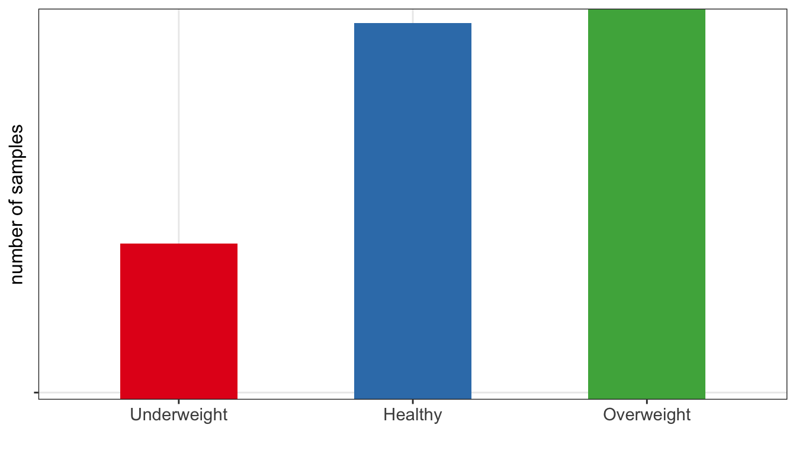

10 Descriptive statistics & feature engineering
In machine learning, feature engineering refers to techniques that transform raw data in order to better represent the underlying problem and as a consequence to enhance the performance of machine learning models. Common methods include transforming variables, creating new variables from existing data, selecting relevant features, and reducing dimensionality. These methods go often hand in hand with descriptive statistics, as descriptive statistics is often used throughout the process to guide features engineering, e.g. one may re-evaluate distributions of transformed, or newly created, variables.
10.1 Feature engineering
Depending on the data, question of interest and modeling strategy such as chosen algorithm, feature engineering techniques may include:
- scaling of numerical features, e.g. scaling to mean 0 and standard deviation 1 scale to prevent features with larger scales dominating the model. By default we used scaling with
kknn()function as it is based on calculating Euclidean distance. - normalization and/or transformations
- representing categorical variables with dummy variables or one-hot encoding to create numerical features. For instance a categorical variable
obesewith three possible vales (underweight, healthy, overweight) can be transformed into two binary variables: “is_healthy”, and “is_overweight”, where the value of each variable is 1 if the observation belongs to that category and 0 otherwise. Only \(k-1\) binary variables to encode \(k\) categories. In one-hot encoding \(k\) binary variables are created.
| id | obese | is_healthy | is_overweight |
|---|---|---|---|
| 902 | Overweight | 0 | 1 |
| 911 | Healthy | 1 | 0 |
| 916 | Healthy | 1 | 0 |
| 1171 | Underweight | 0 | 0 |
| 1185 | Healthy | 1 | 0 |
Example of obese variable with three categories (underweight/healthy/overweight) encoded as dummy variables
- handling missing data via imputations (mean, median, KNN-based) or deleting strategies such as list-wise deletion (complete-case analysis) or pair-wise deletion (available-case analysis)
- handling imbalanced data e.g. via down-sampling and up-sampling strategies or generating synthetic instances e.g. with SMOTE (Fernández et al. 2018) or ADASYN (He et al. 2008)
- feature aggregation: combining multiple related features into a single one, e.g. calculating average of a group
- feature interaction: creating new features by combining existing features e.g. creating BMI variables based on weight and height
- dimensionality reduction: reducing number of features in a data set by transforming them into a lower-dimensional space, e.g. with PCA
- filtering out irrelevant features e.g. using variance threshold or univariate statistics
- filtering out redundant features e.g. keeping only one of a group of highly correlated features
Fernández, Alberto, Salvador Garcia, Francisco Herrera, and Nitesh V Chawla. 2018. “SMOTE for Learning from Imbalanced Data: Progress and Challenges, Marking the 15-Year Anniversary.” Journal of Artificial Intelligence Research 61: 863–905.
He, Haibo, Yang Bai, Edwardo A. Garcia, and Shutao Li. 2008. “ADASYN: Adaptive Synthetic Sampling Approach for Imbalanced Learning.” In 2008 IEEE International Joint Conference on Neural Networks (IEEE World Congress on Computational Intelligence), 1322–28. https://doi.org/10.1109/IJCNN.2008.4633969.